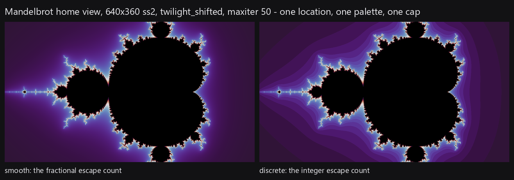

Not written yet. This page holds the section's slug, which is a permanent URL, and the figures the prose will be built around. The code it describes is in fractal-wallpapers.
Figures

Section 4 of 10
The escape count, smooth and discrete, and the frame-relative stretch that turns a field of numbers into a picture.
Not written yet. This page holds the section's slug, which is a permanent URL, and the figures the prose will be built around. The code it describes is in fractal-wallpapers.
